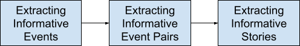

Modern software systems are deployed in sociotechnical settings, combining social entities (humans and organizations) with technical entities (software and devices). After the deployment of such software systems, users constantly interact with them, incurring events and stories regarding how the two parties behave in different scenarios. These events and stories are often captured in natural language artifacts, such as reports and reviews. A story, in the sense of natural language processing, comprises a sequence of events. In this work, we consider an event as a textual event phrase that describes a single action. Stories about system failures can inform developers or other responsible parties of how to improve the systems. Stories about how users behave before and after system problems can provide insights into users' expectations or the best practices to overcome the failures. Extracting and understanding the interaction stories between social and technical entities can promote the incremental improvement of software systems.
We target the extraction and understanding of informative events and stories from textual artifacts that describe the interaction between software systems and their users. This research includes three incremental components, which focus on informative events, event pairs, and stories, respectively. First, we develop LESBRE, a framework for extracting informative events from breach reports and suggesting actions based on the association between breach descriptions and corrective actions. Breach reports describe what happened during and after data breaches in the healthcare domain. Actions taken by the responsible parties afterward can be considered as lessons learned about how to prevent, mitigate, and remedy future data breaches. Second, we introduce CASPAR, a method for extracting and analyzing user-reported event pairs regarding app problems from app reviews. CASPAR collects pairs of events, the first of which describes a user action and the second of which describes an app problem triggered by the user action. These action-problem event pairs capture the essence of the bug-report type of app reviews, and provide information that helps developers maintain and improve the app's functionality and user experience. Finally, we develop SCHETURE, a framework for extracting informative stories and analyzing story structures as patterns of event types in app reviews. Building on CASPAR, SCHETURE targets more event types and how to sequence the events into stories. SCHETURE enables the collection of stories based on story structures. We show how the different story structures seen in app reviews can help developers on their specific goals.
LESBRE discovers informative events that include useful actions promoting security in sociotechnical systems. CASPAR extracts high-quality event pairs regarding app problems from app reviews. By including both user actions and app problem events, event pairs provide richer information about how the problems occur than single events. SCHETURE targets full stories in app reviews and provides a way of analyzing stories based on their structures. Extracting and analyzing stories can capture much more information residing in textual artifacts.
